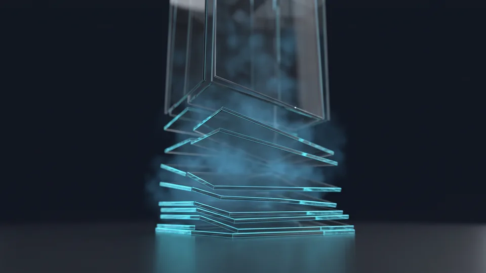

Which Design Decisions Touch the Rankings?
Design decisions affect search visibility indirectly, but powerfully. The search engine reads the content; the visitor reads the layout. When the two contradict each other, the ranking drops. The layout, the heading order and the use of white space set how much of the content actually gets seen. That's why we take the design and the content decisions in the same meeting.
A page's value lies in the text for the search engine, and in the first glance for the visitor. SEO-friendly web design brings those two values together in one structure. The menu gets simpler, the headings fall into order, and the important content moves up. That's why we talk about the SEO side of the design at the first draft.
We handle measurement topics such as crawling and indexing separately; that side falls within the scope of our technical SEO work.
SEO-friendly web design starts from this fact: the visitor doesn't read the page, they scan it. Their eye stops on headings, buttons and bold phrases. When the design makes that scanning habit easier, the content gets the attention it deserves. Otherwise even well-written text goes to waste.
The story the design tells the search engine
A search engine doesn't feel the appearance of a page directly. It still draws a meaning from the heading order, the link structure and the order of the content. A tidy interface presents the subject with a clear hierarchy. A scattered one weakens the signal.The link between user behaviour and design
If a visitor can't find what they're after, they go back. That return is a behaviour showing the page didn't meet the question. A well-built layout carries the answer to the first screen. Time on page lengthens, and the page holds its place in the search results. Where the answer sits is as decisive as the answer itself.What Does Page Layout Mean in Search?
Page layout is the order that sets in which sequence and with what weight the content is presented. On the search side, that order raises the clarity of the subject. On the visitor side, it shortens the decision time. A design that pushes an important heading down can make even strong text invisible. The layout drawing doesn't start before the content plan is ready.
The mistake we see most often on corporate pages is every section being designed with equal weight. On a page like that, no message stands out. Yet SEO alignment in web design starts with making the priority visible. And we set the order of priority by the first question the client asks.
We pick a single main message. We put it on the first screen. Corporate website projects end that sequence just above the form; the visitor has the answer to their question before they reach the quote step.
Heading hierarchy and reading order
There is only one H1 on a page; below it come the H2 blocks that divide the subject, and beneath those the supporting subheadings. In SEO-friendly web design practice, when that order breaks, both the visitor and the search engine lose the thread. We number the headings before we write them.What should be visible on the first screen?
The first screen is the area visible when the page opens, without scrolling. We put three things there: what we do, who it helps, and a link to act on. The rest goes below. That simplicity speeds up both reading and conversion.Why is white space content?
White space isn't decoration. The breathing room between two sections sets the reading order. On cramped pages the headings blur into each other and the reader doesn't know where to stop. We open the gaps between sections to a fixed measure, so every heading owns its own text.Does Visual Weight Affect Rankings?
Yes, visual weight affects rankings. Enormous cover images push the text down. The visitor sees the message late and runs out of patience early. When we position an image as part of the story rather than as decoration, both readability and visibility gain. An image doesn't replace the text; it supports it. We make that distinction section by section.
The number of businesses trading online in Türkiye went from over 600,000 to 634,000 in a year. That growth is set out by the Ministry of Trade's data . As competition grows, visual language alone isn't enough.
Every image should answer a question. Is it showing the product, explaining the process, or building trust? If there's no answer, we remove the image. In SEO-friendly web design decisions, white space does as much work as an image; when we take a box out, we make room for text. We place the images that remain at the right size, with page speed in mind.
Visual density and the balance with content
Images and text on a page should feed each other. In practice we follow a simple balance rule: at most one strong image per main section. We break the text blocks at three or four lines. The eye doesn't tire while scrolling, and the message settles piece by piece.Colour and contrast decisions
Light grey text on grey looks elegant and can't be read on a phone in daylight. The first of the SEO-friendly web design decisions is legibility; the colour palette doesn't drop below that limit. We keep the brand colours and leave the body text in a dark tone.What do we put in place of an image?
When a section is left without an image, we don't go looking for decoration. Most of the time a short three-item list or a clear subheading does the same job. Those are read, and they reach the search engine as text. We use a cover image only where it can explain the subject at a glance.What Do We Watch at the Mobile Breakpoints?
Our first rule at the mobile breakpoint is simple: content isn't lost, it's only rearranged. The breakpoint is the threshold at which the design is rearranged according to the width of the screen. A layout that looks fine on a desktop can become unreadable on a narrow screen. That's why we start the design from the phone screen. We settle the breakpoints before coding begins. That way surprise corrections disappear.
Three things break on a narrow screen: the menu, the tables and the multi-column sections. Our checklist is short and numerical.
- Touch targets should be at least 44 pixels high.
- Body text shouldn't drop below 16 pixels.
- The main call-to-action button should be visible on the first scroll.
- No section should produce horizontal scrolling.
We follow the public data on how widespread mobile use is through BTK's publications — BTK is Türkiye's information and communication technologies authority. That's why we draw the wireframe at the narrow screen width first and then open it out to the desktop. When the order is reversed, menus overflow and tables scroll sideways.
We handle the mobile equivalent of the interface decisions with the same logic in our UI/UX work . We put the breakpoint thresholds in writing at the start of the project.
Touch targets and thumb clearance
On a phone there is no clicking, there is tapping. When small links are lined up next to each other, the finger finds the wrong target. We enlarge the buttons and put space between them. The complaint about mis-taps doesn't come in after that adjustment.The principle of content parity
The mobile version should carry the same information as the desktop. In a search-friendly design approach that equality isn't up for negotiation. Some agencies hide sections on a narrow screen; we don't hide them, we fold them. The visitor opens them if they want to and moves on if they don't. That way the story the page tells stays whole on every device.“The number of businesses trading online, 600,800 in 2024, rose to 634,611 in 2025.”
— Ministry of Trade, The Outlook for E-Commerce in Türkiye 2025
Get a Quote for SEO-Friendly Web Design
We start the quote process with a discovery meeting and put the layout wireframe to you for approval. The goal, the content inventory and the competitor pages come to the table on day one. Once approval comes through, the design and the coding move forward. We share the reasoning behind every decision in writing. That way the budget rests on a plan rather than a guess. If you have an existing site, we look at that too.
The success of a design project is measured not on delivery day but in the third month. That's why we stay with you after launch as well. In the first months we follow visitor behaviour and suggest small corrections to the layout.
If you want to grow your site's search visibility, the quote form is all you need to fill in. Our aim isn't a short-term jump but lasting organic visibility. We look at your existing pages and draw up a concrete route map under the layout, visual weight and mobile breakpoint headings.
How does the process work?
The work runs in four steps: discovery, wireframe, design, launch. In discovery we work out the target audience and the competitor pages. In the wireframe we draw the layout. In design we build the visual language. At launch we bring the measurement setup into play. We take your approval at the end of every step.
What Design Decisions Mean for Visibility and Experience
| Design decision | Effect on visibility | Effect on the user |
|---|---|---|
| Single-column mobile layout | The heading order becomes clear | The reading flow stays unbroken |
| Heavy use of images | The main message drops below the fold | The first impression is delayed |
| A prominent call-to-action button | The purpose of the page is legible | The quote step gets easier |
| A complicated menu | The main subject heading fades | The visitor loses their bearings |
Visibility doesn't come from a single intervention. When you build the layout, visual weight and mobile breakpoint decisions together, the site becomes both readable and findable. For companies doing big work with a small team, that order is a significant gain. We start measuring from the first month and share the findings with you in figures. When you're ready, let's set up the design table together.